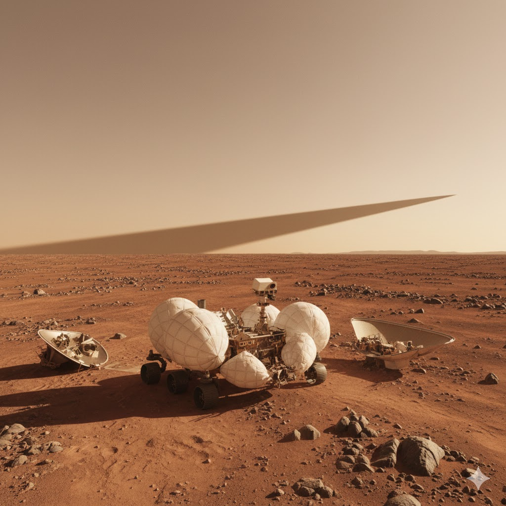

SPIRIT

Agencia: NASA
Fecha de lanzamiento: 10 de junio de 2003
Aterrizaje en Marte: 4 de enero de 2004
Duración prevista: 90 soles (días marcianos)
Duración real: 2004 – 2010
Tipo de misión: Rover de exploración planetaria
Zona de aterrizaje: Cráter Gusev, Marte
Objetivo: Buscar evidencias de agua pasada en Marte, analizar rocas y suelo marciano, y estudiar la geología del planeta.
Carga científica: Cámara panorámica, espectrómetro Mössbauer, espectrómetro de rayos X APXS, microscopio de imágenes, herramienta abrasiva de rocas (RAT), sensores atmosféricos y cámaras de navegación.
Impacto histórico
Spirit fue uno de los dos rovers de la misión **Mars Exploration Rover** enviados para estudiar la superficie de Marte. Aunque su misión inicial estaba diseñada para durar solo 90 días marcianos, el rover continuó operando durante más de **seis años**, superando ampliamente las expectativas.
Durante su exploración del cráter Gusev, Spirit encontró **minerales formados en presencia de agua**, evidencias de actividad volcánica antigua y depósitos de sílice que sugieren posibles ambientes hidrotermales en el pasado de Marte.
En 2009 el rover quedó atrapado en arena blanda y dejó de moverse, pero continuó funcionando como **estación científica fija** hasta que finalmente se perdió contacto en marzo de 2010.
La misión Spirit cambió profundamente nuestra comprensión del pasado geológico de Marte y abrió el camino para futuras misiones robóticas de exploración planetaria.
ESTADO: MISIÓN COMPLETADA ÚLTIMA SEÑAL: MARZO 2010 ⬅ Regresar a Misiones No Tripuladas